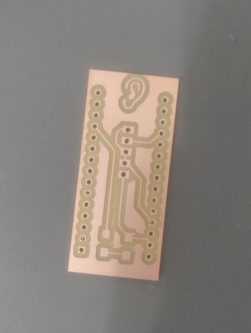
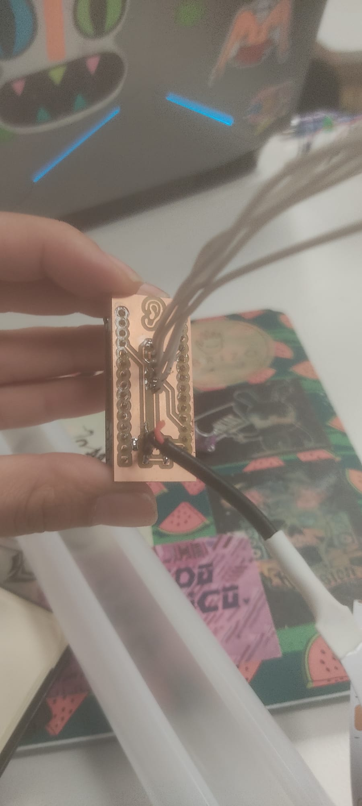

Process images
 Week 10 reflections.
This week I keep working on my previous design PCB, once I had the schematics and the programming working the only thing left was milling the PCB. To do that, I export in svg format the schematic from kicad and post process it in illustrator. I need to make three layers, one of the layers should contain the outline, other the holes to insert the pcb as a shield and other layer with traces that are going to be the channels that connect the Arduuino pins.
Once I had the layers made I needed to generate a gcode from http://modsproject.org/ page in which I need to select the parameters for each layer. Traces layer is going to be milled with the 1/64 endmill, later I did the holes with the 1/32 endmill and the last one, the outline with 1/32 enmill. After place the cooper layer inside the CNC I needed to stablish the XYZ.
At least, I cutted the PCB in this order: 1. Traces, 2. Holes and 3.Outline Then I soldered the components in the way I needed them. (I know that the task said without wires but as I need the PCB for a lamp I need the sensor to be far away from the PCB.) I tried it and it works!
As you can see in the code I have an input that is the amount of sound that the sensor receives and a digital output that is the LED strip that works at 5V.As the pcb is a shield I don't need to program a separate microcontroller.
Finals reflections: It was a super nice week, see how even the simple circuits we design in the breadboard can be simplified that much.
In this video I show how is the operation of the lamp in which is already included the Arduino with the shield.